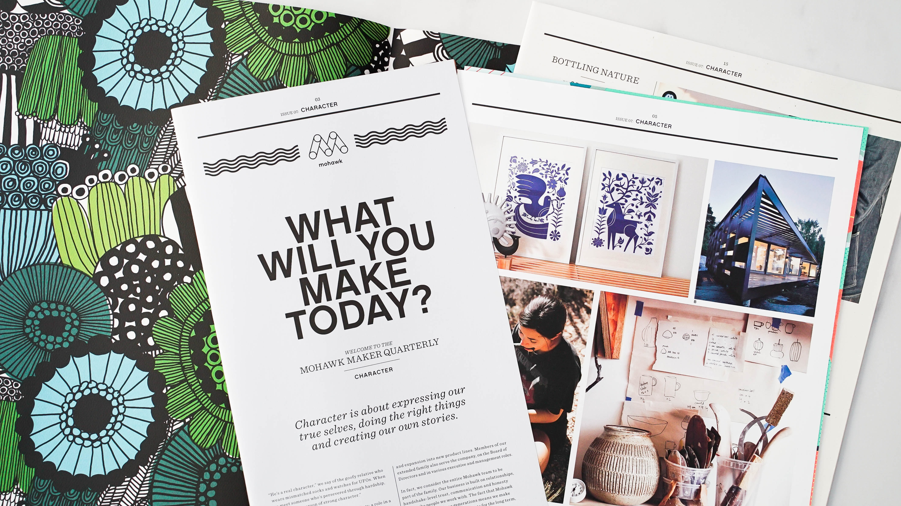
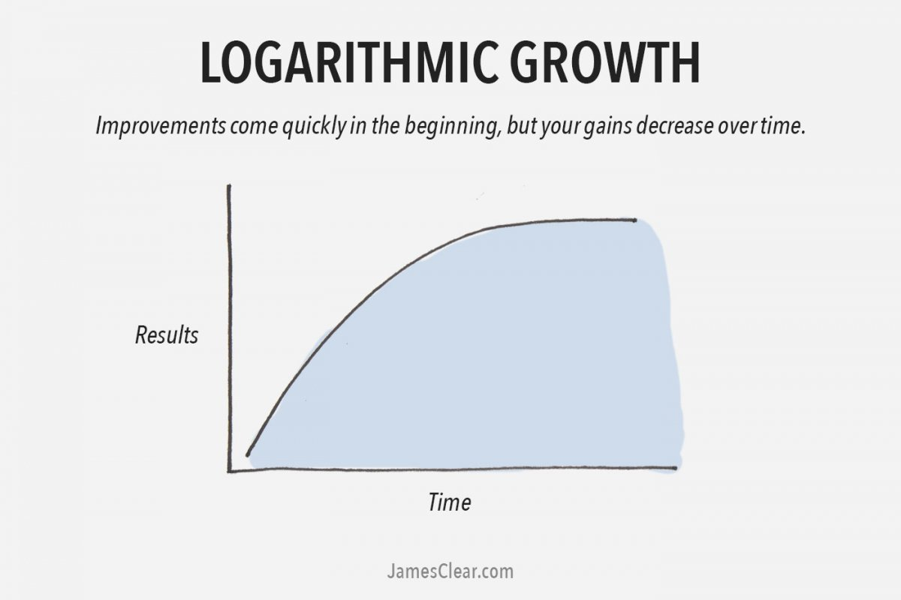
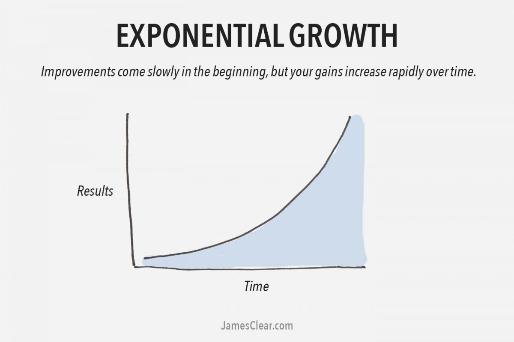

Made with ❤️

On Experiances & Experiments
I find that we all are in the quest of knowing as much as we can in this world. Whatever it may be, we want to know it all for the things we want to. whether a job, a hobby, a skill, we want to know everything of it and I feel like it works as a test...if you are doing something you really want to...like...if you want to know everything about it then bingo, you know you are on some right path on doing things that you want to do and not doing just for the sake of doing it. What things to do is a topic for a different day because we humans may even want to know about unnecessary useless things too which is very subjective.
So, on that point how do you know it all? I find there are two ways of knowing: Experiances and Experiments.
Knowledge from experiance works like a logarithmic curve while from Experiment works in a exponential way. See the images below which I borrowed from James Clear. You can find it here and it is also an interesting take on growth.

